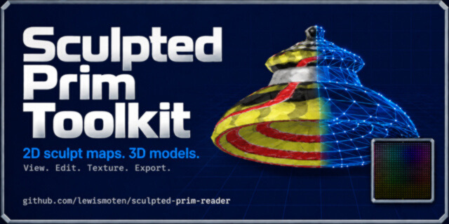

Sculpted Prim Toolkit
Three.js editor

Decodes Second Life-style RGB sculpt maps into editable 3D geometry in the browser, with exports to PNG, glTF/GLB, OBJ, and STL.
Executive summary
Why it exists
A sculpted prim stores its shape as position data in the red, green, and blue channels of an image. Without a tool, that shape is hard to see, inspect, or change.
Outcome
Exports a PNG sculpt map, and glTF, GLB, OBJ (with optional MTL and PNG texture), or binary STL models. It runs as a static page from GitHub Pages with no server runtime.
My role
Author and maintainer.
Technical overview
How it works
An in-browser viewer and editor that reads the RGB position data and turns it into an interactive Three.js model. Camera views include orbit, orthographic, perspective, isometric, and face-oriented. You can show wireframes, point clouds, NURBS surfaces, and performance statistics, and select and edit single vertices from the 2D map or the 3D scene. Textures can be applied, along with generated vertex-color, density, distance, and face-angle maps.
Hard parts
Editing happens in two places, the 2D map and the 3D scene, and the tool previews source RGB data, selected pixel coordinates, rows, columns, and mesh statistics. Unused map pixels can be shown several ways, including a live camera view.